May 2018 - August 2018
Envision a world where all people hold the power to
create opportunity for themselves and others.
Kiva is a donating web platform that enables local banks and donors
to support local businesses by lending out finances or loans. With
family members with small businesses, the mission of this nonprofit
strongly resonates with me as I believe they encourage more
participation and support towards local businesses.
"As they said, dreams are universal, but opportunity could be
hard to come by."
Role
UI/UX Designer
Videographer & Video Editor
Audience
New & inexperienced users of human-
centered design
Any curious and passionate mind
Tools
Adobe XD
Adobe After Effects
Adobe Premeire Pro
Disclaimer
Before starting through this tutorial, I just wanted to clarify and note that I am by no means a professional. However, I more than happy to share my design process! Each person has their own design process and I believe anyone can learn new approaches and perspectives from this as well.
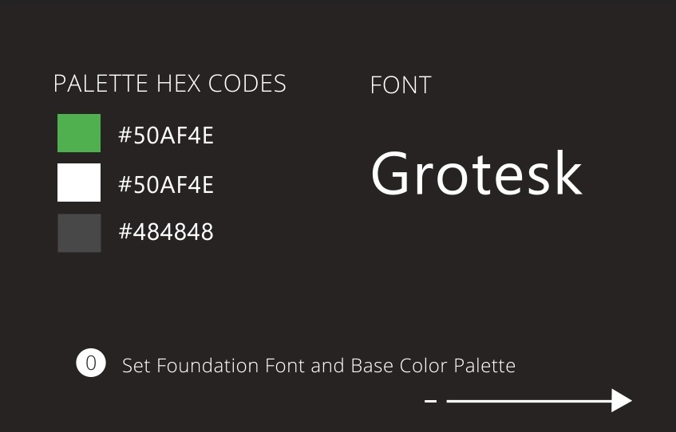
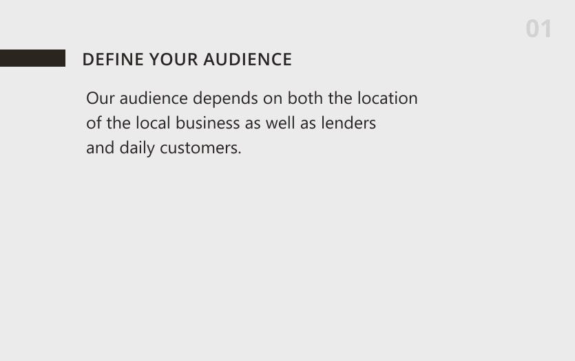
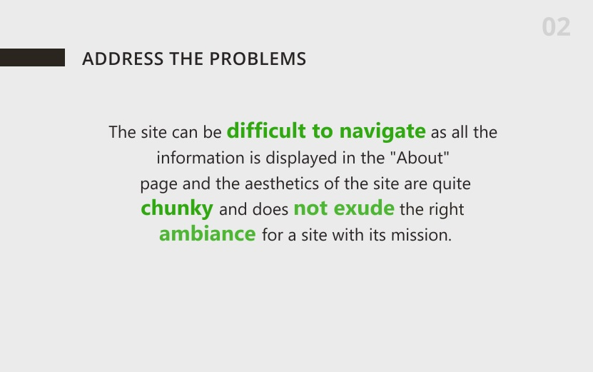
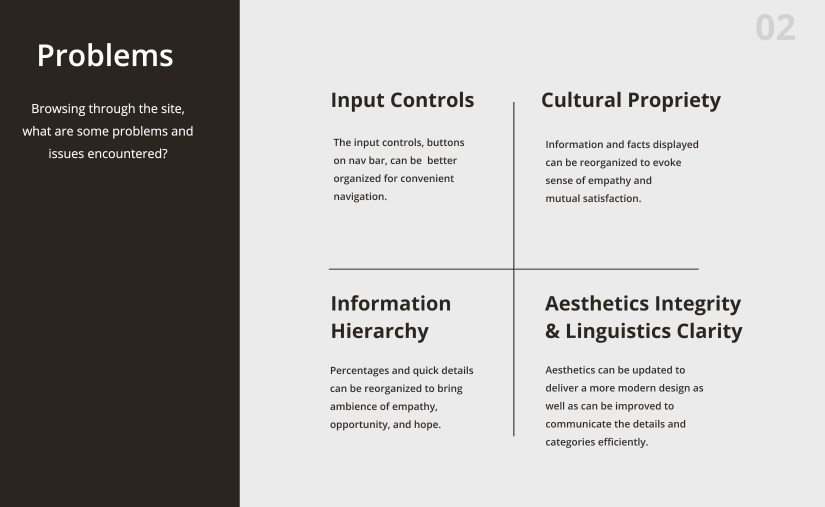
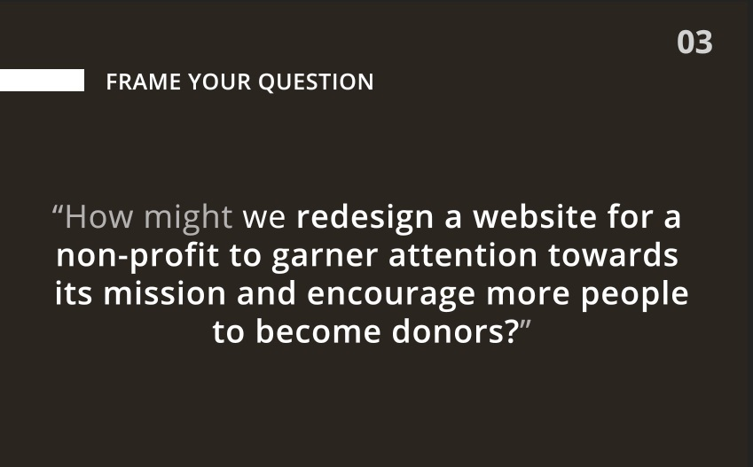
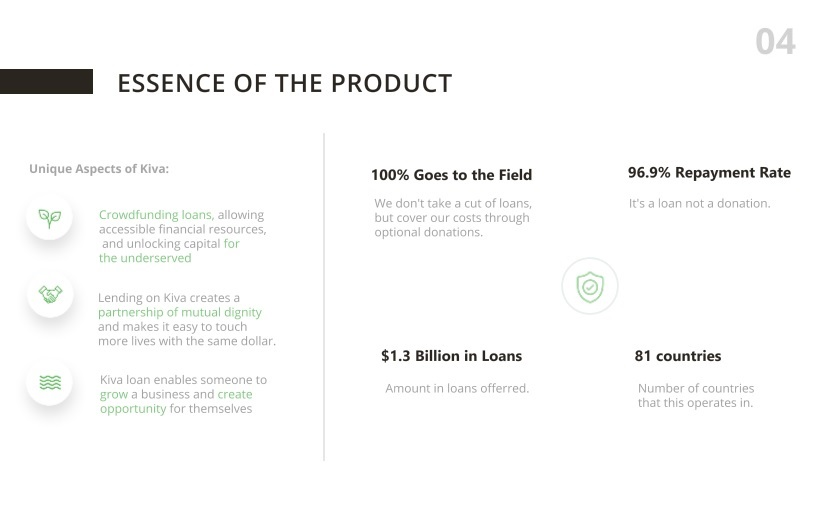
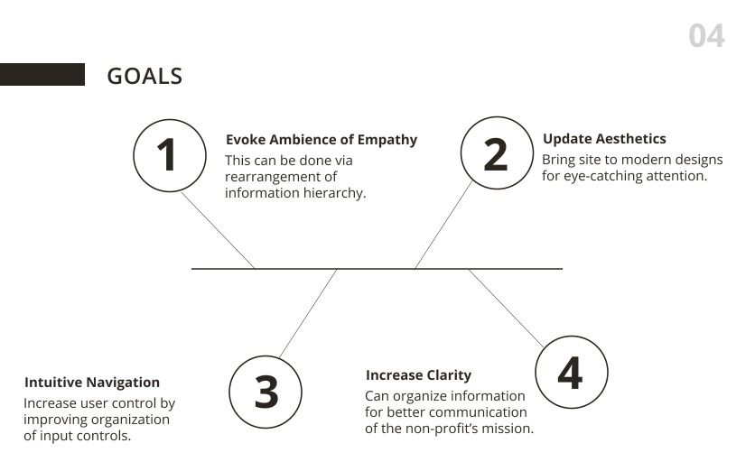
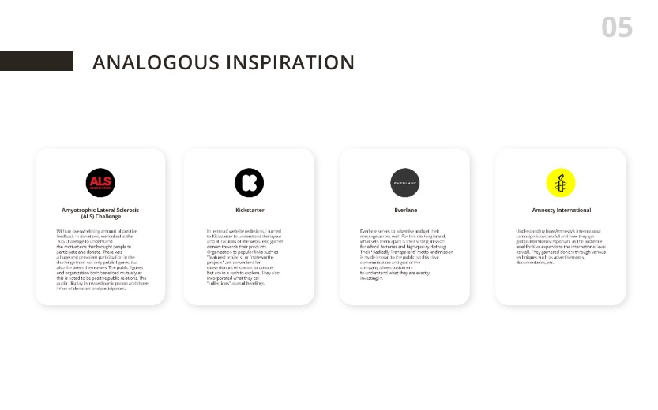
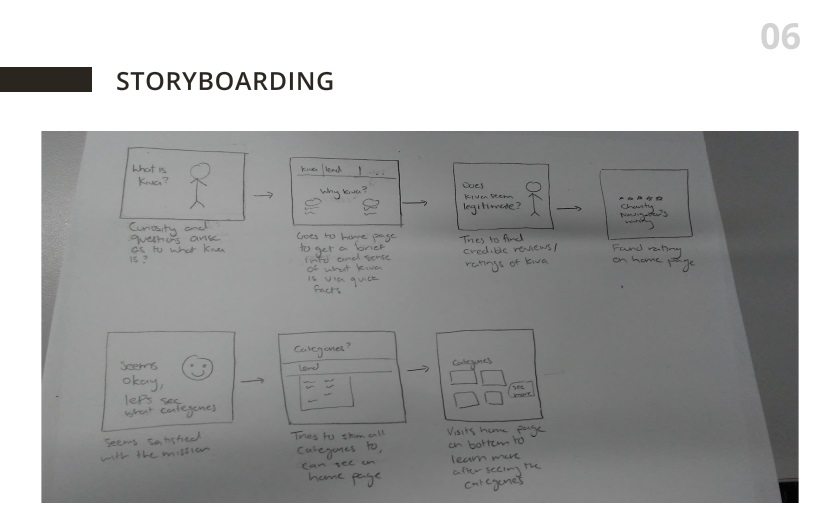
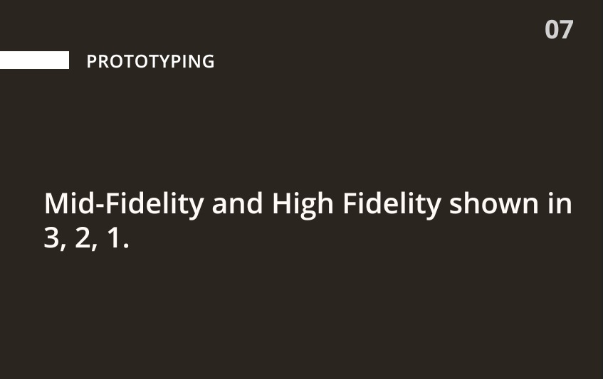
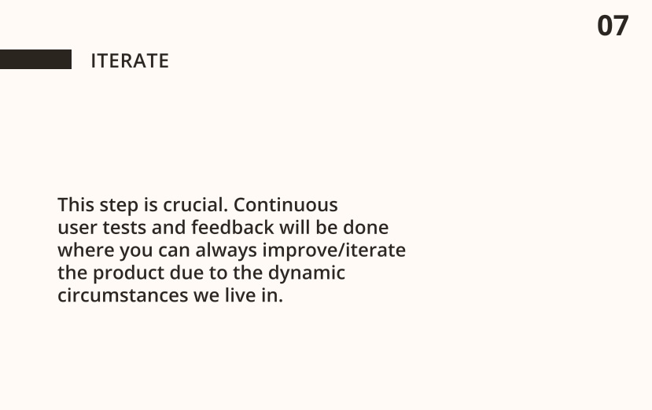
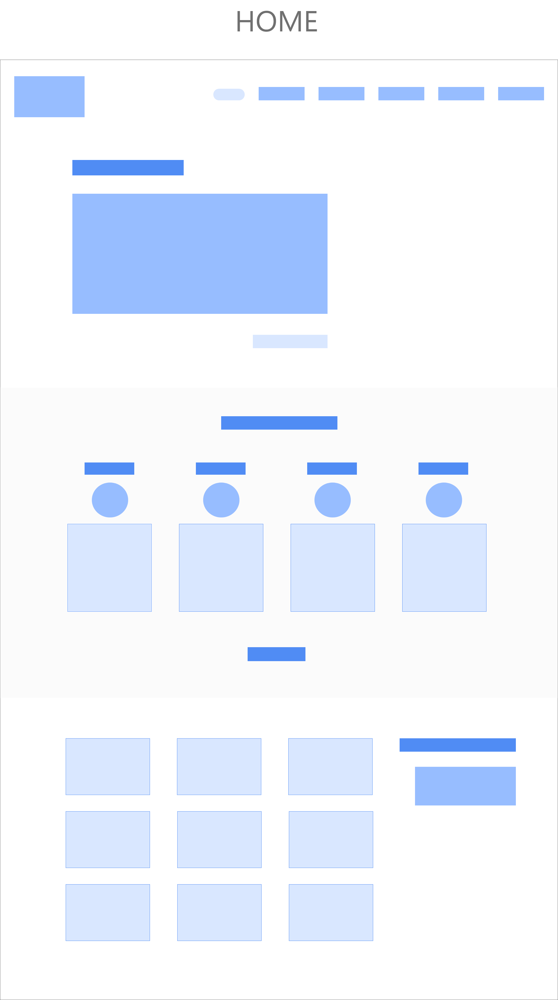
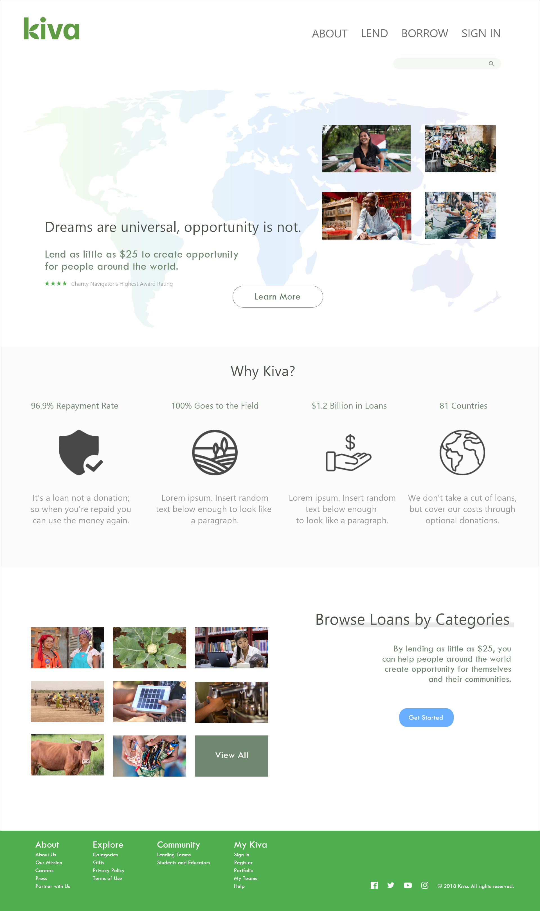